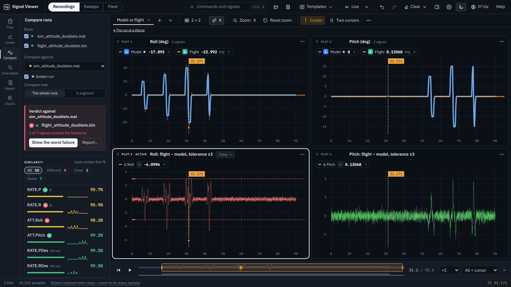
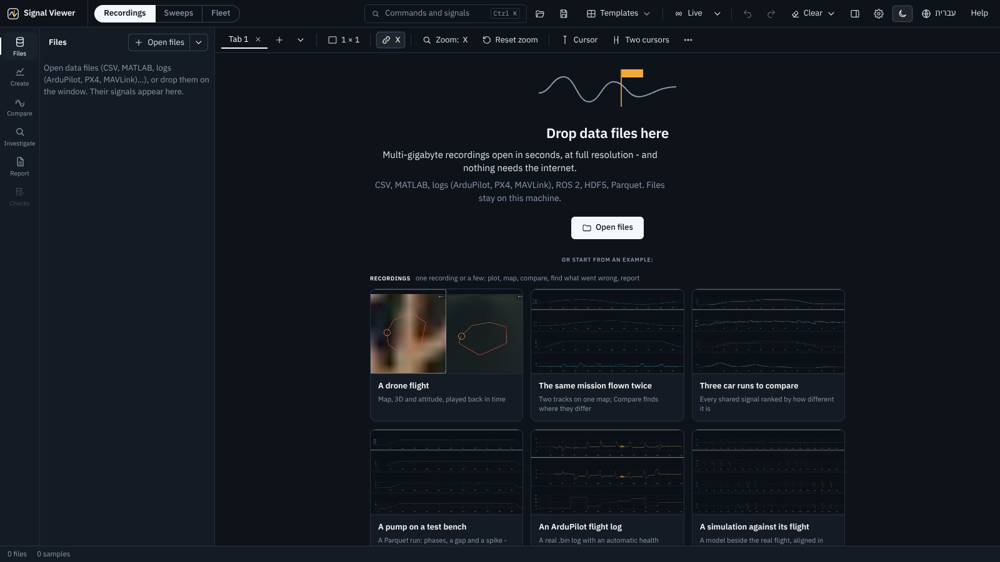

Signal Viewer¶
Find what went wrong. Prove what is right. Send the answer. An offline engineering data analysis and validation workbench for any time-series data – flight, vehicle and bench tests, simulation output, ROS 2 and CAN recordings, parameter sweeps – on your own machine, with every computation validated. Flight logs (ArduPilot, PX4) are one kind of data it reads, and its example data, not its limit.
Download for Windows Get started מדריך בעברית
CSV · MATLAB .mat · ArduPilot .bin · MAVLink .tlog · PX4 .ulg · ROS 2 .mcap · HDF5 · Parquet · CAN + .dbc · your own formats

Try it in one minute¶
Every part of the app has a demo with a known answer on the welcome screen – a flight, a flight log's health check, a simulation against its flight, a fault to find, a parameter sweep, the loop that picks the next runs, a folder of flights summed up in one table, and a pump on a test bench with its pass / fail checks. One click each; nothing to prepare.

What you do with it¶
-
Find what went wrong
Two cursors around the moment, then What changed? – every signal that left its usual range, in time order, the likeliest cause first, who led whom. Name the event and find every time it happened.
-
Judge a run against a golden one
A tolerance per signal, pass or fail, the worst moment and the verdict for the report – and the same check in CI (
signalviewer-cli compare,check, JUnit XML). -
Review a flight – map, 3D, story
ArduPilot, PX4 and MAVLink logs with an automatic health check; every object on an offline map or in 3D over real terrain; ▶ Story flies the camera to each moment that matters.
-
Choose parameters that hold everywhere
Which parameter sets hold in every scenario, how the runs spread over each scenario, one set for several systems – and the loop that runs your program (or your farm) until the best stops changing.
-
A whole folder of recordings
The same numbers measured in every recording of a folder, one row each in Sweeps: which number is growing over the weeks – and open the ones that need a look, together.
-
Send the answer
One HTML page that opens with the process in brief – the data, what was checked, what it shows, the conclusion – then every plot, map and 3D view on one time bar. PDF and Word too.
Numbers you can trust¶
Every computation is checked against a reference that does not come from the app – a closed-form result, a definition (WGS84) or an independent textbook computation – and the readers are checked against logs from real vehicles, field by field, with their projects' own readers.
-
Validation – spectra, filters, statistics, Compare, conditions, formulas and frames, plot speed, 29 cases, with the expected and measured values. Run them yourself:
signalviewer-cli validate. Validation -
Performance – multi-gigabyte recordings open in seconds; every sample stays available at full resolution; display decimation keeps every spike; a sweep of a million runs opens with its answer in about 2 s. Performance
-
Known limitations – what it does not do yet, said plainly. Known limitations
Install¶
SignalViewer-Setup-X.Y.Z.exe from the latest release –
for your user only, no administrator rights – or the portable .zip.
pip install signalviewer # everything; or signalviewer-lite for the core
signalviewer # the app; signalviewer-cli for the command line
git clone https://github.com/DavidAlpert11/SignalViewer.git
cd SignalViewer && pip install -r requirements.txt && python run.py
Nothing needs the internet at run time – not the map, not the 3D terrain. No account, no telemetry; nothing is sent unless you choose an online map background (what that sends). More about installing.
Source, releases and issues on GitHub · MIT License · English and Hebrew.